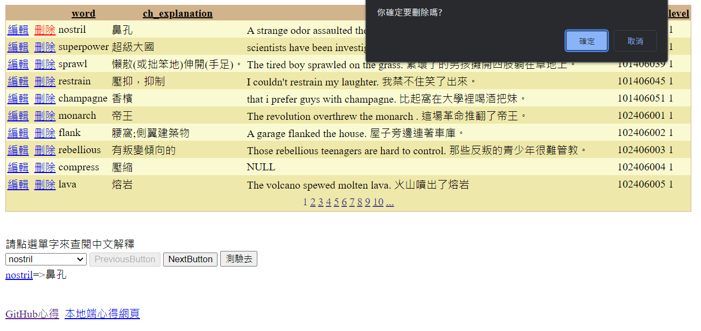
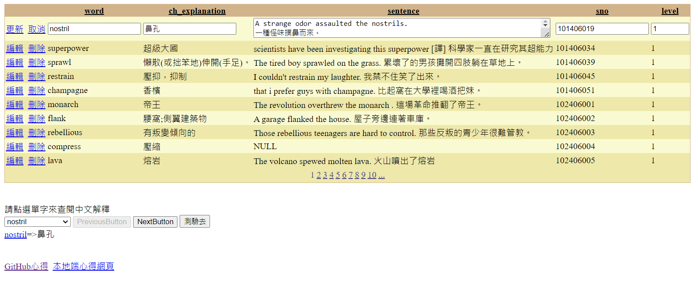
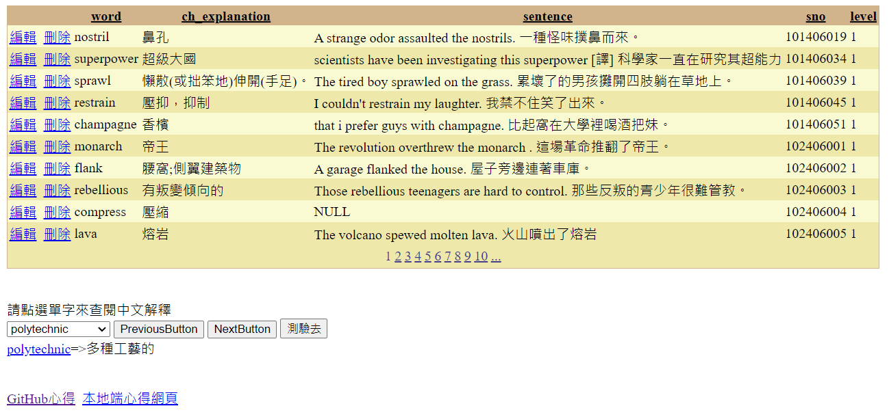
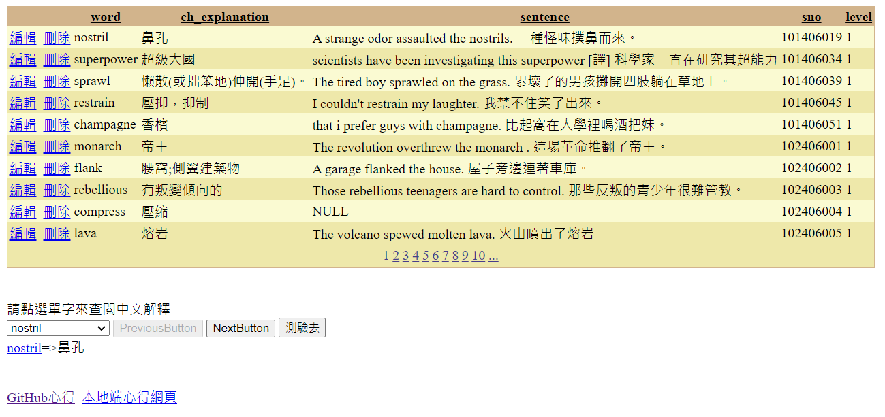
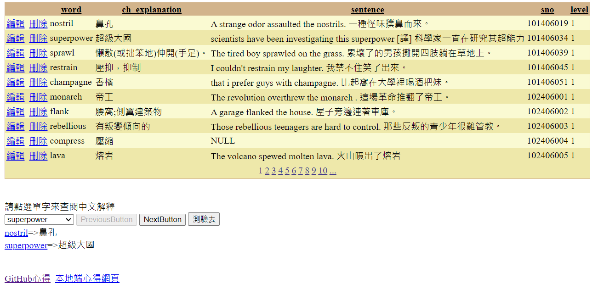
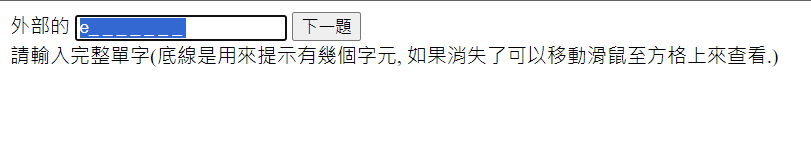
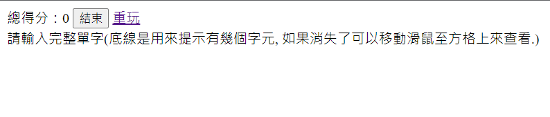

GEPT Words 單字測驗 ASP.NET 程式開發心得
作者：CBF110038 王律涵
開發思路與解決方案
在這裡，你可以描述你在開發過程中的思考過程，以及你如何解決問題的。
開發過程
1.首先就先利用資料庫匯入功能將gept_words.xls匯入資料庫的資料表, 將id欄位設成主鍵。
2.然後以gridview分頁顯示資料表內容(不顯示 id欄位), 並允許編輯與刪除資料。欲刪除資料前會先跟使用者做確認. 確認訊息為"你確定要刪除嗎?"
3.顯示時編輯刪除按鈕不要換行 (設定ItemStyle的Wrap=False)，當按下編輯按鈕時, sentence欄位會充滿整個儲存格(width='98%', 多行)。
4.使用DropDownList 顯示單字，按下按鈕可以顯示後10個單字，或前10個單字.
5.點選DropDownList中的項目會顯示對應的中文解釋，依次記錄在下方。換頁(按下前10個單字或後10個單字按鈕)後則清空，並呈現第一筆單字的英文中文對應及超連結。
6.超連結只有在英文部份出現，會連至cambridge字典，方便使用者查詢該單字。
7.GridView刪除資料時會反應至DropDownList. 按鈕會依目前是最後一頁或第一頁來呈現可按或不可按狀態。
8.按下"測驗去"按鈕後會進入測驗。測驗題目為最近在DropDownList中呈現的單字。題目會呈現中文解釋及英文首字元及底線提示有幾個字元。
9.出題次序是隨機且不重複(洗牌演算法)。
10.測驗時可以完全使用鍵盤(不使用滑鼠)連續輸入。
11.能顯示"結束"按鈕，點入後可正確結束程式。
12.能顯示"重玩"連結，點入後可正確重新執行。
解決策略
1.使用 OnClientClick="return confirm('你確定要刪除嗎?')" 在刪除時能夠顯示確認訊息。
2.設定ItemStyle的Wrap=False，且要轉換成TemplateField欄位，在sentence的textbox中，設定Width="98%" TextMode="MultiLine"。
3.在CBF110038_nextQBtn_Click事件內設定CBF110038_input.Focus();
4.在CBF110038_end_Click事件內設定Environment.Exit(0);
5.在最後一題後，設定Label2.Visible = true;以及CBF110038_end.Visible = true;
使用的技術與引用來源
在這裡，你可以列出你在開發過程中使用到的技術，以及你參考的資料來源。
使用的技術
ChatGPT
上課的影片以及補充。
引用的資源
ChatGPT
網頁與資料庫
上課的影片以及補充。
遇到的問題與解決方法
在這裡，你可以分享你在開發過程中遇到的問題，以及你是如何解決這些問題的。
遇到的問題
1.能夠顯示英文字的超連結。
解決的方法
1.使用字串插補的方式，將英文字放進 a href中。
修改後的程式內容
在這裡，你可以分享你修改後的程式碼，並解釋你做了哪些改變。
修改的部分
1.
int newSelectedIndex = Math.Max(0, CBF110038_DDL1.SelectedIndex - 10);
CBF110038_DDL1.SelectedIndex = newSelectedIndex;
CBF110038_cambridge.Text += $"{CBF110038_DDL1.SelectedItem.Text}" + "=>";
CBF110038_cambridge.Text += $"{ CBF110038_DDL1.SelectedValue}";
CBF110038_NextButton.Enabled = true;
if (newSelectedIndex == 0) { CBF110038_PreviousButton.Enabled = false; }
2.
int itemCount = CBF110038_DDL1.Items.Count;
int newSelectedIndex = Math.Min(CBF110038_DDL1.SelectedIndex + 10, itemCount - 1);
CBF110038_DDL1.SelectedIndex = newSelectedIndex;
CBF110038_NextButton.Enabled = newSelectedIndex < itemCount - 10;
CBF110038_cambridge.Text += $"{CBF110038_DDL1.SelectedItem.Text}" + "=>";
CBF110038_cambridge.Text += $"{ CBF110038_DDL1.SelectedValue}";
程式碼說明
1.
SelectedIndex是CBF110038_DDL1中當前選中項目的索引。索引是從0開始的，表示第一個項目。
CBF110038_DDL1.SelectedIndex - 10表示當前選中項目的索引減去10。取得當前選中項目的前10個項目的索引。
Math.Max(0, ...)是一個數學函式，它會返回兩個參數中的較大值。在這裡，用來確保新計算的索引不會小於0。
如果SelectedIndex - 10小於0，則返回0，否則返回SelectedIndex - 10。
最後，計算結果被賦值給newSelectedIndex變數。
接著顯示第一筆的資料，並當點下後，NextButton設為可點選。
當newSelectedIndex == 0時，CBF110038_PreviousButton設為不可點選。
2.
計算當前選中項目的索引加上 10。取得當前選中項目的後 10 個項目的索引。
CBF110038_DDL1.Items.Count - 1取得下拉列表中的項目總數，並減去 1。因為索引是從 0 開始的，所以最大的有效索引是項目總數減去 1。
Math.Min(...)這個函式會返回兩個參數中的較小值。確保新計算的索引值不會超過下拉列表中的有效範圍。
最後，計算結果被賦值給 newSelectedIndex 變數。
接著顯示第一筆資料，當newSelectedIndex < itemCount - 10，將CBF110038_NextButton.Enabled依據前句所說true就啟用，false就關閉。
程式執行畫面
在這裡，你可以分享你的程式執行畫面，並解釋每個畫面的功能。
功能介紹
1.當點選刪除時，會詢問使用者確定刪除嗎?
2.當點選編輯時，sentence欄位會充滿整個儲存格。
3.當按下下一頁時，能夠顯示第一筆資料。
4.當按下上一頁時，能夠顯示第一筆資料。
5.當點選CBF110038_DDL1的項目時，會顯示其英文和中文。
6.當點選測驗去時，能夠跳出題目。
7.當題目完成後，能夠顯示其分數、結束及重玩。
畫面展示
1.當點選刪除時

2.當點選編輯時

3.當按下下一頁時

4.當按下上一頁時

5.當點選CBF110038_DDL1的項目時

6.當點選測驗去時

7.當題目完成後

個人心得與反思
在這裡，你可以分享你對於這次開發經驗的感想，以及你從中學到了什麼。
學習心得
學習到上述所提到的，雖然有些功能並沒有完整做出來，但我會繼續努力將其完成的。
未來展望
繼續努力，沒有完成的地方回去研究，將其想出來。